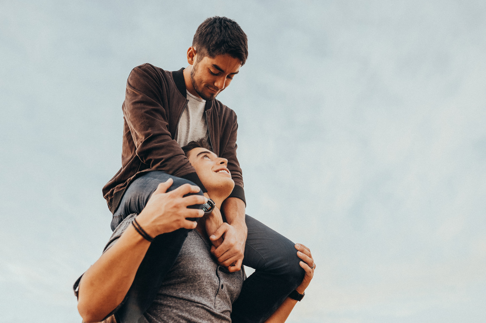
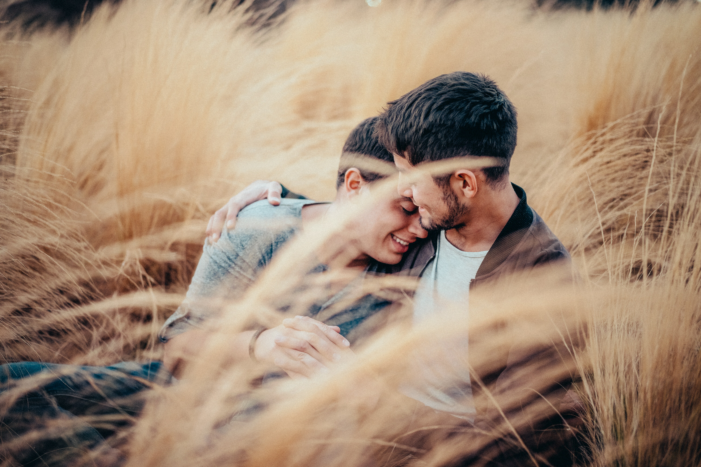
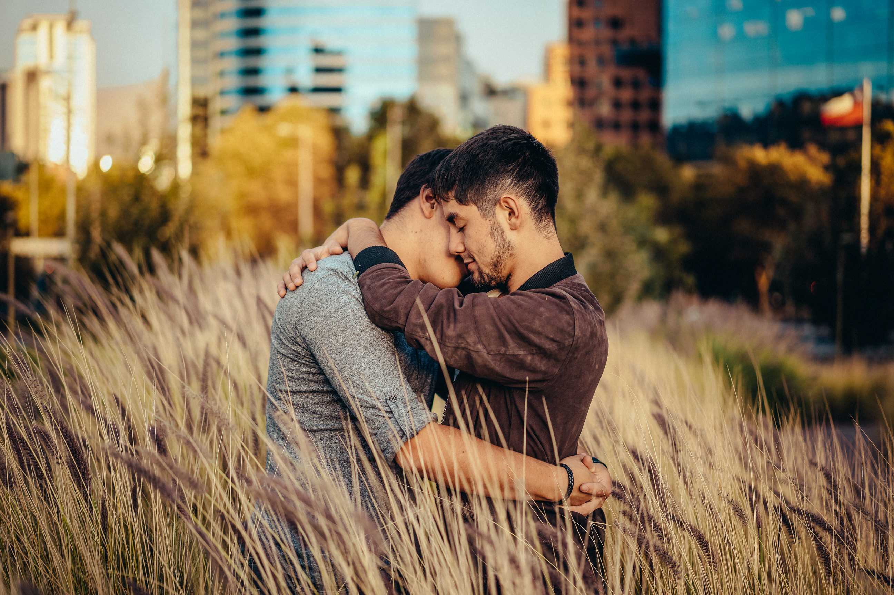
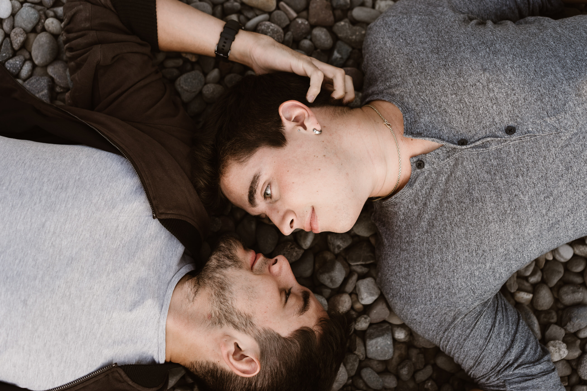
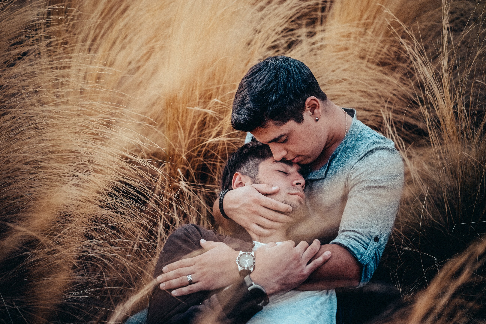
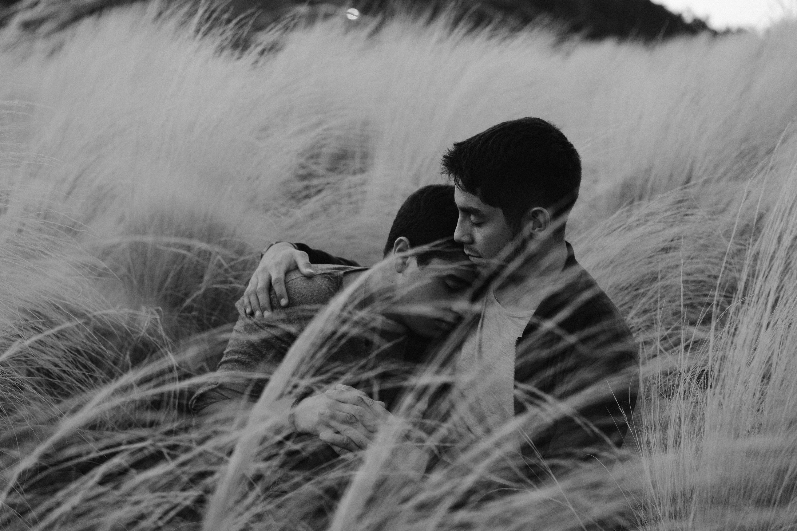

Año 2016, Agustín llevaba 1 mes de novio, pero para él sentía que todo había avanzado muy
rápido, lo suficiente para entender que no podía seguir aguantando esta relación. Por eso y para
poder comprenderse a sí mismo, decidió bajar Tinder, buscando amigos más que nada, alguien para
charlar y cambiar los aires emocionales que sentía. Entre swipe negativos y swipe positivos, dio
a parar con Mizzio, un chico de su misma edad que le llamó la atención. Le dio like y fue con
match. Empezaron a hablar y se dieron cuenta de que había química entre los dos, pasaron a
hablar por WhatsApp, pero siempre como amigos, pero esto no detenía a Mizzio, a que le enviara
uno que otro piropo a Agustín.

Pasaron Los días y Agustín seguía sin darle una oportunidad de superar la brecha de “amigos”,
ignorando las invitaciones a salir a alguna parte, pero como dice el dicho el que sigue la
consigue, y así fue para estos dos tórtolos. Mizzio invito una vez más a Agustín a salir, esta
vez a un parque, súper tranquilo, con tal que aceptara a salir. Todo bien, conversaron
tranquilos, se divirtieron, la pasaron bien, pero no pasó nada, Agustín como seguía de novio, el
rechazaba cada intento de que algo más pasara, pasaron las horas, empezó a oscurecer hasta
llegar la noche, ya con la llegada de esta los dos se despidieron. Ambos siguieron sus caminos
para lados distintos como si nunca se hubieran visto, o eso creía Agustín.

Mizzio por su lado había quedado apenado que no le dieran la oportunidad de demostrar cariño,
así que no se hizo problema y no espero a encontrar al indicado y se fue a aprovechar al
equivocado.

Los chicos seguían conversando y cada vez a Agustín le crecía un bichito de curiosidad con
Mizzio, en ese momento Agustín se dio cuenta que su relación actual no daba para más y solo
estaba matando el tiempo, que sentía más cariño por Mizzio que por su pareja actual, por lo que
decidió terminar para poder finalmente darse un beso. Agustín tomo la iniciativa e invito a
Mizzio a verse otra vez, jugándosela como nunca antes, pero no pasó nada, cosa que no lo
desalentó. En Mizzio el bichito también había crecido un poco, así que decidió que la tercera
era la vencida y que, si no lo hacía ahora, no lo haría nunca. Se juntaron una vez más y bum,
ambos estaban en la misma página, ambos al fin querían las mismas cosas, y lo que debía pasar,
paso, en la misma banca en donde se habían visto por primera vez. Desde ahí todo siguió de bien
en mejor, se seguían viendo en su parque de siempre y aprovechaban la oportunidad para poder
conversar y disfrutar todo el momento que pudieran, porque el tiempo no les sobraba
lamentablemente.

Paso el primer mes desde que se conocieron y un día en la noche decidieron ir al cerro a estar
acostados un rato mientras miraban las estrellas, llevaron comida y una manta para hacer un
“picnic” de noche; mientras conversaban salto un tema importante para ese momento, como se
consideraban uno al otro, que tan lejos había llegado el afecto entre ellos; conversaron y
conversaron, ambos evitando verdaderamente el tema, hasta que finalmente decidieron que estaban
saliendo, ambos tímidos de aceptar que sentían un considerable cariño mutuo. Todo continuo de la
misma manera por otro mes, ya estaban más familiarizados el uno con el otro, perdieron ciertas
vergüenzas, cada vez se querían más entre sí; las tardes se les hacían cortas ahora en su
parque, el tiempo nunca era suficiente para estar juntos, por lo que decidieron verse cada vez
más entre las semanas, escapándose del mundo para entrar a su pequeño universo en donde solo
ellos dos estaban, queriéndose y aceptándose.

Otra vez decidieron ir al parque donde siempre se juntaban, pero en esta ocasión había algo
distinto, Agustín notaba a Mizzio distinto, algo había por ahí que él no le estaba diciendo,
algo que guardaba para sí. Estaba nervioso, no sabía si era bueno o no, así que Agustín decidió
empezar a indagar de a poco que le pasaba a Mizzio. Mizzio por su parte no sabía qué hacer,
realmente estaba en blanco, creía que quería más, que solo estar saliendo no era suficiente de
la misma manera que también pensaba que llevarlo más allá era mucho, esto lo tenía súper
complicado. ¿Lo hacía? ¿Decía esas tres complicadas palabras? ¿O simplemente dejaba que todo
siguiera así? La noche se les fue y todo solo se ponía más tenso, Agustín ya se hacia la idea de
lo que estaba pasando, pero Mizzio en su mundo no tenía idea. Estaban casi por irse, el tiempo
se les había acabado, estaban en el parque donde siempre; Mizzio ya se cansó de pensarlo, y
simplemente dijo lo que quería decir, Le pidió que fueran novios esa noche, improvisadamente en
la mitad de una conversación random(cualquiera), Ambos estaban en la misma página, Agustín no
dudo y dijo que si mientras las lágrimas le corrían por los ojos.
Ese 19 de agosto del 2016 se embarcaron en una complicada aventura, que los ha llevado para
todos partes juntos, donde aprendieron a amarse completamente.